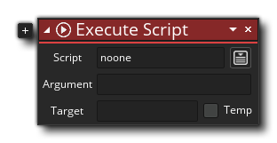
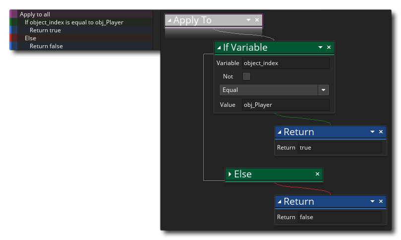

L'une des ressources de l' arbre de ressources est la ressource Script. Les scripts sont simplement des blocs de code ou des actions DnD™ exécutés comme s'ils étaient l'une des fonctions ou actions intégrées de GameMaker Studio 2. Nous avons une section entière du manuel sur l'écriture de scripts en utilisant le code ( ici ), mais vous pouvez également créer des scripts en utilisant uniquement les actions Glisser-Déposer.
Un script DnD™ (comme toute action DnD™ intégrée) peut prendre des valeurs différentes (ou aucune), puis effectuer une chaîne d'actions et renvoyer une valeur ou ne rien retourner, et vous l'appelleriez en utilisant le script d'exécution action, qui ressemble à ceci:  Les variables d'entrée sont appelées arguments, et vous pouvez en fournir jusqu'à 4 en utilisant cette action (bien que vous puissiez en utiliser toutes, certaines ou aucune, selon ce dont vous avez besoin pour le script), mais vous pouvez aussi utiliser le code Execute pour appeler le script, auquel cas votre script peut avoir jusqu'à 16 arguments (en utilisant le argument0 ... argument15 variables) ou autant d'arguments que nécessaire (lors de l'utilisation du argument[n] tableau): 
Pour créer un script DnD™, il vous suffit d'utiliser le bouton droit de la souris  sur la ressource de script et sélectionnez Créer. Cela va créer un nouveau script DnD™ et ouvrir la fenêtre de l'éditeur:
sur la ressource de script et sélectionnez Créer. Cela va créer un nouveau script DnD™ et ouvrir la fenêtre de l'éditeur: 
Vous pouvez nommer le script par un clic droit  dans l'arbre des ressources et en sélectionnant Renommer (ou en utilisant un lent double clic gauche
dans l'arbre des ressources et en sélectionnant Renommer (ou en utilisant un lent double clic gauche  ), mais notez que le nom du script doit être conforme aux règles de script pour les fonctions, de sorte qu'ils doivent commencer par une lettre et contenir uniquement des lettres, des chiffres ou le symbole de la barre de soulignement "_".
), mais notez que le nom du script doit être conforme aux règles de script pour les fonctions, de sorte qu'ils doivent commencer par une lettre et contenir uniquement des lettres, des chiffres ou le symbole de la barre de soulignement "_".
Comme mentionné ci-dessus, vous pouvez passer un certain nombre d'arguments à un script, et il va les utiliser pour effectuer la tâche pour laquelle vous l'avez écrit. Pour mieux comprendre cela, prenez par exemple une action et réfléchissez à son fonctionnement... vous la placez dans un événement et spécifiez un certain nombre de paramètres, ce qui fera que votre instance fera quelque chose. Les scripts sont exactement les mêmes, la seule différence étant que vous les écrivez. L'image ci-dessous montre un script DnD™ simple qui prend un seul argument et l'utilise pour créer un nombre d'instances à des positions aléatoires dans une pièce: 
Notez que nous attribuons la valeur argument0 à une variable temporaire au départ. Toutes les valeurs transmises dans un script sont affectées aux variables intégrées suivantes:
argument0, argument1, ..., etc... up to argument15
Vous pouvez directement accéder à ces variables d'argument intégrées, ou les affecter à des variables temporaires (locales) comme nous l'avons fait dans l'exemple ci-dessus (l'utilisation de variables temporaires facilite le suivi de ce que chacun fait et est recommandée). Dans le script ci-dessus, la valeur de argument0 est ce qui sera utilisé pour déterminer le nombre de fois que le repeat la boucle sera exécutée, et vous appelleriez le script comme ceci: 
Non seulement vous pouvez passer des arguments dans un script, mais vous pouvez également demander un script pour renvoyer une valeur trop ( en utilisant le retour  action), vous pouvez donc les utiliser pour (par exemple) construire des méthodes de calcul ou redonner un ID d'instance après une détection de collision complexe ou un nombre quelconque de choses. Notez toutefois que l' utilisation de la fonction de retour met fin au script et qu'aucune action placée après son utilisation ne sera exécutée, ce qui signifie qu'une certaine réflexion doit être menée sur la structure de vos scripts.
action), vous pouvez donc les utiliser pour (par exemple) construire des méthodes de calcul ou redonner un ID d'instance après une détection de collision complexe ou un nombre quelconque de choses. Notez toutefois que l' utilisation de la fonction de retour met fin au script et qu'aucune action placée après son utilisation ne sera exécutée, ce qui signifie qu'une certaine réflexion doit être menée sur la structure de vos scripts.
Voici un script de glisser-déposer qui retourne une valeur: 
Le script ci-dessus vérifie simplement toutes les instances dans une pièce pour voir ce que leur object_index est et si l'un d'eux est l'objet joueur le script va revenir true (terminant le script) ou false. Vous appelez ce script comme ceci:  Ainsi, nous appelons le script et le faisons créer une variable temporaire (locale) pour stocker la valeur retournée (qui dans ce cas est soit true ou false ), puis cette variable est vérifiée et une action est effectuée.
Ainsi, nous appelons le script et le faisons créer une variable temporaire (locale) pour stocker la valeur retournée (qui dans ce cas est soit true ou false ), puis cette variable est vérifiée et une action est effectuée.
Lorsque vous créez vos scripts DnD™, vous pouvez utiliser toutes les mêmes actions que lorsque vous ajoutez des actions à un événement objet, et vous pouvez même appeler des scripts depuis des scripts, et ainsi créer plus de code d'action "modulaire". Les scripts construits de cette manière peuvent vous faire gagner beaucoup de temps en créant les mêmes séquences d'actions et peuvent également faciliter la lecture de vos séquences d'actions et faciliter le débogage.